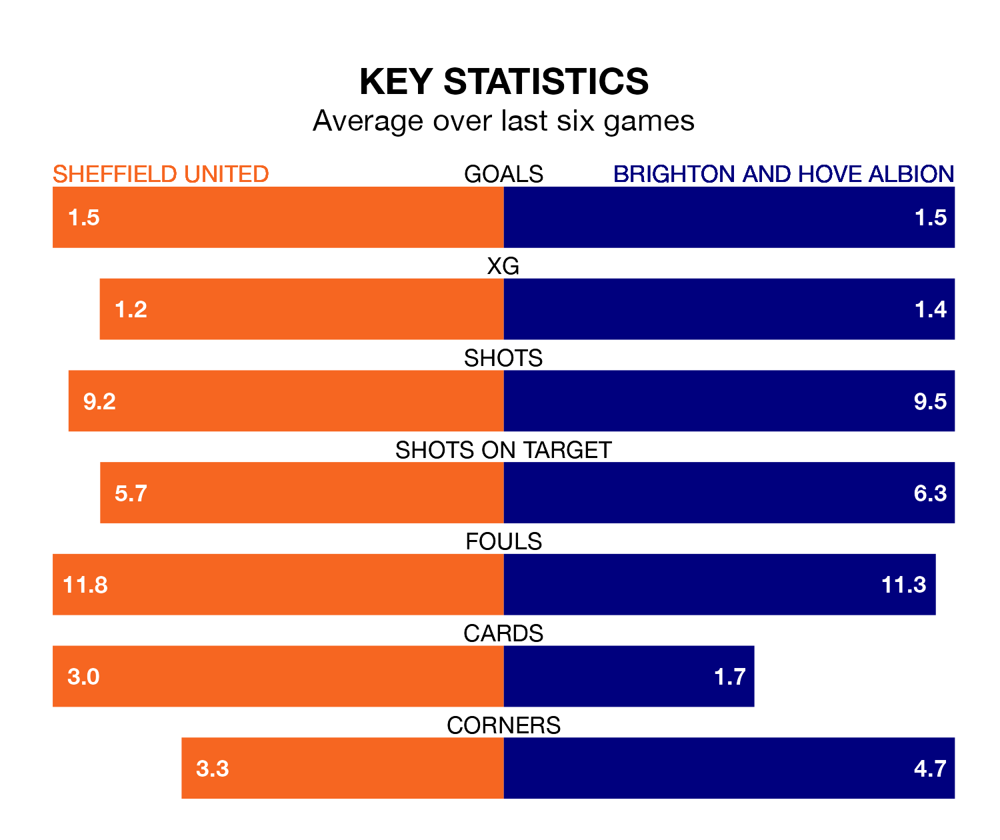

Struggling Sheffield United face Brighton and Hove Albion at Bramall Lane on Sunday looking to build on a win in their last league outing.
After securing all three points with a 3-1 victory over Luton Town on February 10, the Blades sit bottom of the Premier League.
They travel to play a Brighton side ninth in the standings, who lost in their last match, 2-1 against Tottenham Hotspur.
In the last 10 years, United and Brighton have played each other on six occasions. United won two of them, Brighton one, and they drew three times.
On average, the Blades scored 1.2 goals and Brighton 1.3 in those matches.
Their last meeting was on January 27, when Brighton won 5-2 away.
With 22 goals in 24 games so far this season, United are the league's lowest scorers with 0.9 goals per game. And they are conceding more than average, letting in 60 goals at a rate of 2.5 per game.
Brighton, meanwhile, are above average scorers, with 1.8 goals per game, compared to a league average of 1.6. They have conceded 1.7 goals per game.
The Blades are in bad form in the Premier League, with one win and a draw from their last six games.
With two wins and two draws over that period, Albion's form is better – they have taken eight points from 18, compared to the home team's four.
The visitors' Pascal Groß is among the league's most creative players, racking up eight assists in 22 appearances so far this season, and holding third spot in the Premier League's assist charts.
For United, Gustavo Hamer has set up the most goals, having laid on three assists in 22 games.
Updated: 09:02 (UTC), 13/02/24